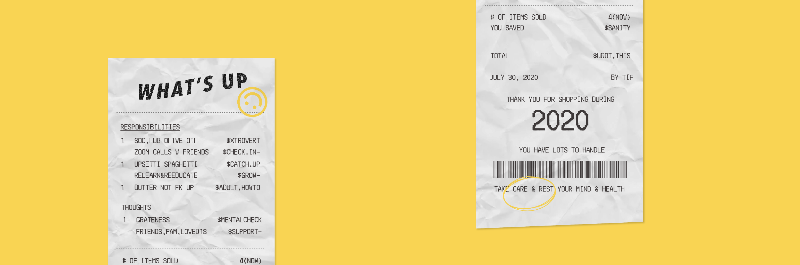

Meal for 2020
A 3 part graphic series dedicated to some stressors and responsibilities I've had so far this year. I also aimed to explore the use of texture in my graphics and quirky rebranding of notable food brands.Role
Graphic Designer
Tools
Adobe Illustrator
Timeline
1 week, Jul 2020

Background
2020 had been a momentous, horrifying, and decade-changing year for most of us. With 'Meal for 2020', I wanted to echo some of the stressors and responsibilities that some of my friends and I faced, particularly those who were post-graduates.
The series was inspired by artsyaffirmation’s post ‘You’ve got a lot on your plate!’ due to its message to recognize the acceptableness when it came to mental health care. With my series, I decided to give the narrative of making pasta — 1. Buying groceries, 2. Receiving the receipt, and 3. Eating the pasta — while giving some quirky visuals and wordplay, to convey those post-grad stressors and responsibilities.
The series was inspired by artsyaffirmation’s post ‘You’ve got a lot on your plate!’ due to its message to recognize the acceptableness when it came to mental health care. With my series, I decided to give the narrative of making pasta — 1. Buying groceries, 2. Receiving the receipt, and 3. Eating the pasta — while giving some quirky visuals and wordplay, to convey those post-grad stressors and responsibilities.